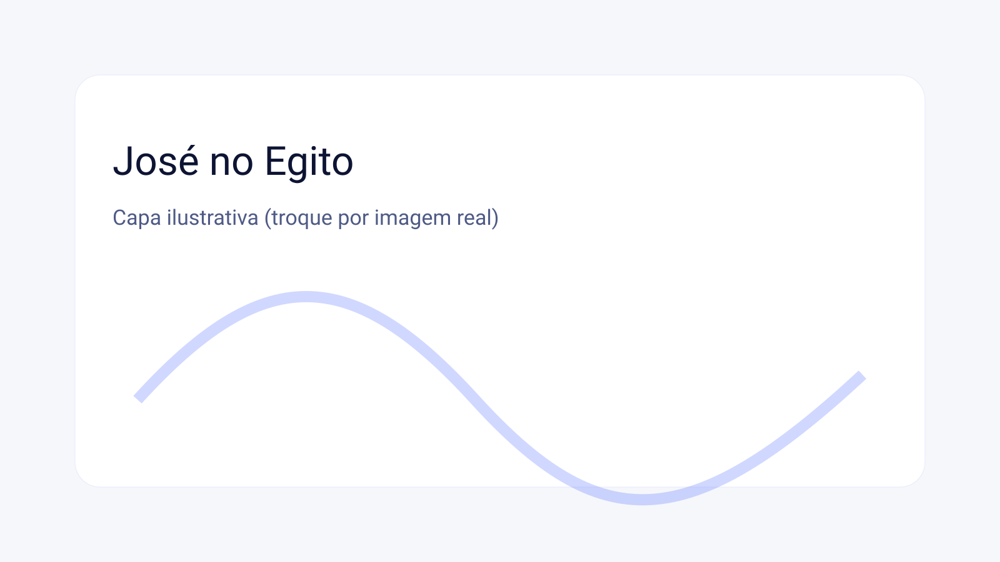
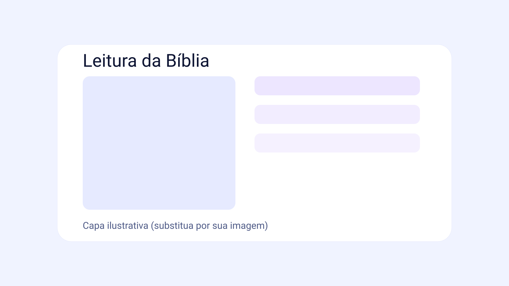
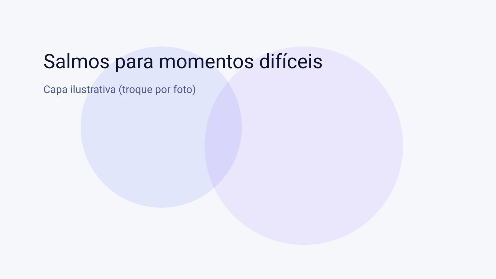
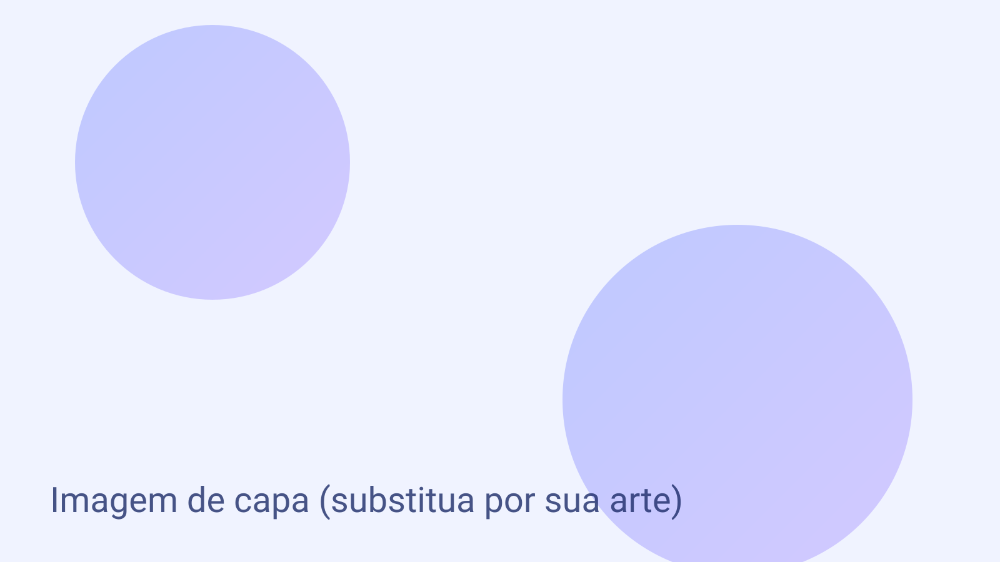

A história de José: da traição ao propósito
Uma leitura profunda de Gênesis 37–50: rejeição, injustiça e providência de Deus.

Uma leitura profunda de Gênesis 37–50: rejeição, injustiça e providência de Deus.

Método simples para criar disciplina espiritual diária e crescer com o tempo.

Versículos e aplicações práticas para fortalecer o coração em tempos de aflição.

Uma oração objetiva e bíblica para fortalecer a confiança em Deus (com aplicação diária).